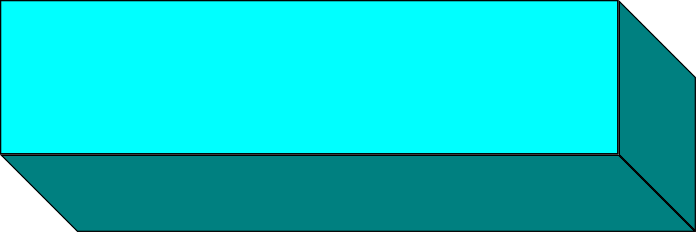
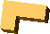
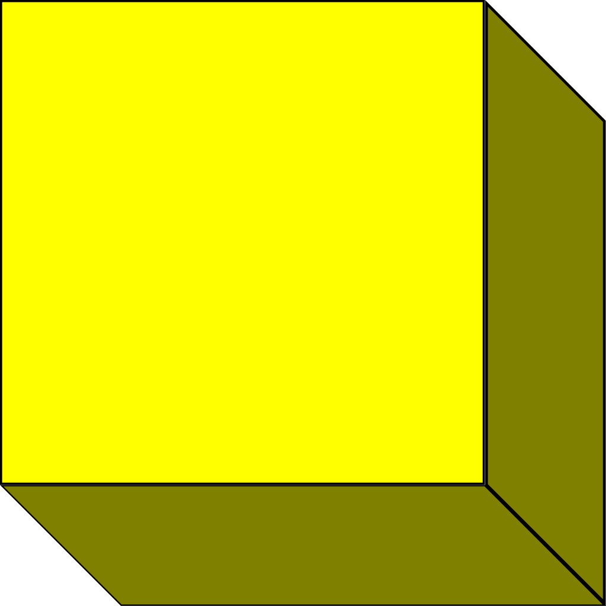
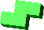
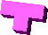

Es un videojuego de lógica soviético originalmente diseñado y programado por Alekséi Pázhitnov.
Su nombre deriva del prefijo numérico griego tetra- (cuatro), ya que todas las piezas del juego, conocidas como tetrominós, contienen cuatro segmentos, y del tenis, el deporte favorito de Pázhitnov.
El juego (o una de sus muchas variantes) está disponible para casi todas las consolas de videojuegos y sistemas operativos de PC, así como en dispositivos tales como las calculadoras gráficas, teléfonos móviles, reproductores de multimedia portátiles.
Historia
Imagen de Alekséi Pázhitnov (2008)
Alekséi Pázhitnov se había inspirado en un juego de pentaminós que había comprado anteriormente. El nombre «tetris» deriva del étimo griego «tetra», que significa «cuatro», y hace referencia a la cantidad de cuadros que componen las piezas. Alekséi Pázhitnov programó una versión de su juego en un Electrónika 60.
Tetris comenzó a ganar popularidad cuando Vadim Gerasimov, un joven de 16 años que trabajaba en la Academia, portó el juego a IBM PC.
Estas versiones llamaron la atención de Robert Stein, que intentaba adquirir los derechos del juego. Antes de conseguir estos derechos, vendió el concepto robado a la empresa inglesa Mirrorsoft y a su filial estadounidense, Spectrum Holobyte, que editaron una versión para Atari ST y Sinclair ZX Spectrum. Tetris se comercializaba en Europa y en Estados Unidos en 1987 con la mención
«Fabricado en Estados Unidos, creado en el extranjero»
Tetris ha sido históricamente uno de los videojuegos más versionados y es, junto a las Torres de Hanói, el predilecto de los programadores noveles de juegos. Atari y Nintendo lucharon por robarse la idea y licenciarla; lo logró finalmente este último
En el siglo XXI sigue siendo un juego popular entre una comunidad y se han superado varios récords.
En principios de 2024 Willis Gibson, un adolescente de 13 años de Stillwater, Oklahoma , logró un hito nunca antes visto en la historia de los videojuegos: llegar al final del Tetris, algo que hasta ese momento solo se creía posible mediante inteligencia artificial.
Un logro documentado en un vídeo de YouTube, en el que se puede ver cómo mientras Gibson jugaba la versión original de Tetris en Nintendo, avanzó hasta tal punto que el juego se congeló, mostrando una puntuación de 999999.
Funcionamiento del juego
Se basa en figuras geométricas compuestas por cuatro bloques cuadrados unidos de forma ortogonal las cuales se generan de una zona que ocupa 5x5 bloques en el área superior de la pantalla. No hay consenso en cuanto a las dimensiones para el área del juego, que varía en cada versión.Sin embargo, dos filas de más arriba están ocultas al jugador.
El jugador no puede impedir esta caída, pero puede decidir la rotación de la pieza (0°, 90°, 180°, 270°) y en qué lugar debe caer. Cuando una línea horizontal se completa, esa línea desaparece, todas las piezas que están por encima descienden una posición y liberan espacio de juego.
La caída de las piezas se acelera progresivamente. El juego acaba cuando las piezas se amontonan hasta llegar a lo más alto (3x5 bloques en el área visible), interfiriendo la caída de más piezas.
Piezas
Pieza
Simbolo
Tetris Original
Microsoft Tetris
Tetris DS

I
Rojo
Rojo
Cyan
J
Blanco
Magenta
Azul

L
Magenta
Amarillo
Naranja

O
Azul
Cyan
Amarillo

S
Verde
Azul
Verde

T
Marrón
Gris
Morado
Z
Verde
Verde
Rojo
eSports
El Classic Tetris World Championship (CTWC) es un campeonato de videojuegos, organizado por Portland Retro Gaming Expo.
La competición lanzada en 2010 busca determinar el mejor jugador de Tetris del mundo.
La competición dura dos días, con la Ronda de Clasificación durante el primer día y el evento Principal durante el segundo. Los participantes tienen permitido traer su control propio, pero éste tiene que ser un control de NES original sin modificaciones.
El Classic Tetris World Championship se juega con un cartucho original 8-bit de Nintendo NES. Aquellos individuos que han apoyado el evento reciben una edición limitada dorada del juego.